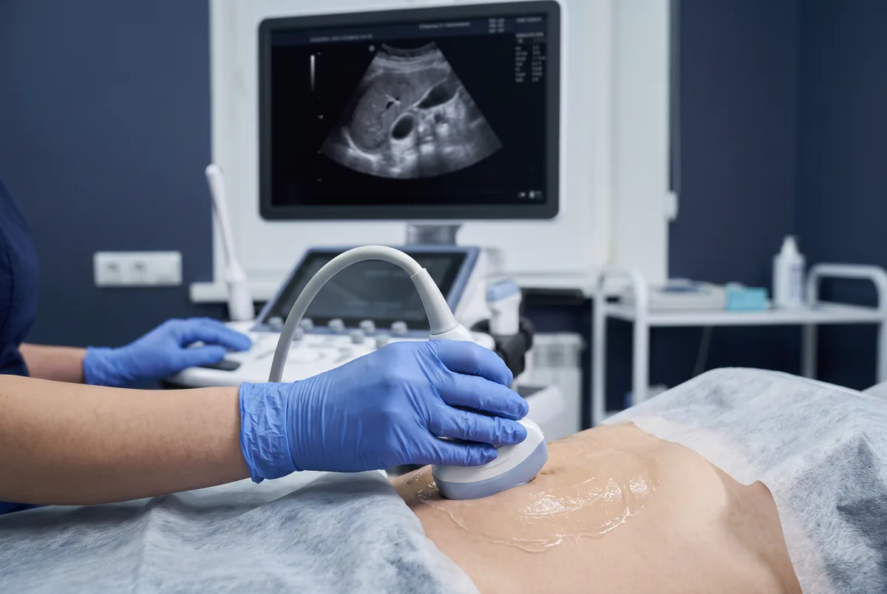

Dr. Marcelo Marquez Cruz · Mérida
Ultrasonido Abdominal
Abdominal / hígado y vías: ayuno de 4 a 6 horas. No fumar ni chicle; líquidos claros en sorbos OK. Renal: vejiga llena (~1 L, 1 h antes). Hernias: sin ayuno. Guía en preparación.
El ultrasonido abdominal es el estudio de imagen más utilizado para evaluar los órganos del abdomen. Es seguro, sin radiación, y permite obtener imágenes en tiempo real de hígado, vesícula biliar, páncreas, bazo, riñones, aorta abdominal y vejiga. La preparación es fundamental: se requiere ayuno de 4 a 6 horas para que la vesícula biliar esté distendida y llena de bilis, lo que permite detectar cálculos incluso de 2 mm. Si el paciente ha comido, la vesícula se contrae y los cálculos pueden no ser visibles.
El ultrasonido hepático detecta hígado graso (esteatosis hepática), cirrosis, quistes hepáticos, hemangiomas y masas. El ultrasonido de vesícula y vías biliares identifica cálculos biliares, pólipos, colecistitis aguda y dilatación de la vía biliar. El ultrasonido renal evalúa el tamaño, la morfología y detecta cálculos renales, quistes, hidronefrosis y masas. El ultrasonido de páncreas es útil para detectar pancreatitis aguda, pseudoquistes y tumores pancreáticos. El ultrasonido de pared abdominal es el estudio de elección para diagnosticar hernias inguinales, umbilicales y epigástricas, con la ventaja de poder evaluarlas dinámicamente con maniobra de Valsalva.
El ultrasonido abdominal también permite detectar apendicitis aguda (especialmente en niños y mujeres jóvenes), aneurisma de aorta abdominal, ascitis (líquido libre en el abdomen) y adenopatías retroperitoneales. El ultrasonido prostático evalúa el volumen de la próstata, hiperplasia benigna y residuo postmiccional, y es complementario al PSA en el seguimiento del paciente urológico.
Indicaciones para este estudio
¿Cuándo solicitar un ultrasonido abdominal?
- Dolor abdominal agudo o crónico de cualquier cuadrante
- Sospecha de colelitiasis, colecistitis o coledocolitiasis
- Elevación de enzimas hepáticas (ALT, AST, fosfatasa alcalina)
- Sospecha de hígado graso (esteatosis hepática)
- Evaluación de riñones: litiasis, hidronefrosis, quistes
- Sospecha de apendicitis aguda
- Seguimiento de hepatitis viral crónica o cirrosis
- Detección de ascitis o líquido libre intraabdominal
- Evaluación de bazo y páncreas
Preparación: Ayuno de 6 horas obligatorio (permite que la vesícula esté distendida y el gas intestinal sea mínimo). Puede tomar sus medicamentos con un sorbo de agua. Acudir con ropa cómoda.
- Ultrasonido hepatobiliar (hígado y vías biliares)
- Ultrasonido renal y de vías urinarias
- Ultrasonido de páncreas
- Ultrasonido de bazo
- Ultrasonido de pared abdominal (hernias)
- Rastreo abdominal completo
- Ultrasonido prostático

También puede interesarte
Ultrasonido Ginecológico y Obstétrico
Transvaginal, control prenatal, morfológico y 4D.
Ultrasonido Doppler Vascular
Várices, trombosis venosa y Doppler carotídeo.
Ultrasonido de Tiroides y Cuello
Nódulos tiroideos, bocio y ganglios cervicales.
Ultrasonido Hígado y Vías Biliares
Doppler hepático, cálculos biliares e hígado graso.
Ultrasonido Renal y Vías Urinarias
Cálculos renales, hidronefrosis y próstata.
Preguntas frecuentes
¿Cuántas horas de ayuno para ultrasonido abdominal en Mérida?
¿El ultrasonido abdominal detecta piedras en la vesícula?
¿Detecta hígado graso y apendicitis?
¿Detecta hernia inguinal o de pared abdominal?
¿Cómo se hace el ultrasonido de próstata?
Más respuestas en preguntas frecuentes.
Contacto
Agenda tu ultrasonido
Atención en Ultrasonido Biogamma, Mérida, Yucatán. Diagnóstico preciso.